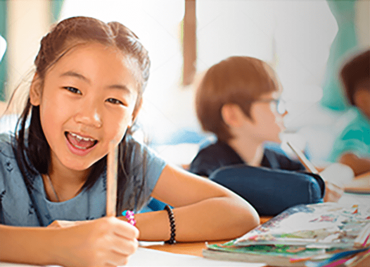
- 레이즈미의 집중도 분석
AI 모델을 소개합니다
- 집중도와 상관관계가 높은 뇌파로 라벨링 한 영상데이터를 학습한 AI가 더 정확하게 판정할 수 있습니다.
Eye Tracking으로는 구분할 수 없는 청각 집중상태나 멍하게 시선만 고정한 상태를 구분할 수 있습니다.
- Showcase 체험하기
차별화 포인트
Feature 01
- 이미지가 아닌 영상단위 분석
- 이미지는 연속된 동작이나 상태의 변화를 측정하기에 부정확합니다.
- Raiseme의 집중도 분석 AI 모델은 영상 속 동작의 앞뒤 문맥을 파악해 유사한 동작들의 차이를 측정할 수 있습니다.
Feature 02
- 뇌파 활용 라벨링된 학습데이터
- 자세, 행동, 표정이 변할 때 집중력도 함께 변화합니다.
- Raiseme는 한양대 뇌공학연구실과 초중등, 성인들을 대상으로 연구하여 집중/비집중 뇌파를 기반으로 딥러닝된 AI모델입니다.
Feature 03
- 원격수업 적용을 통한 최적화
- AI의 분석대상 및 데이터 측정 기능은 현직교사들이 참여한 실험을 통해 개발됐습니다.
- 원격수업에 최적화된 AI 모델로 수업 집중도를 측정하고 이를 통한 학습효과 개선이 이미 검증되었습니다.
- 레이즈미의 흥미도 분석
AI 모델을 소개합니다
- Raiseme의 흥미도 분석 AI 모델은 영상 속 사람의 표정변화와
얼굴 근육 상태의 변화 등을 분석해서 흥미도를 측정합니다.
긍정적인 감정 상태에서 느끼는 흥미도 뿐만 아니라
흥미도를 얼마나 유지하는지 판정할 수 있습니다.
- Showcase 체험하기
차별화 포인트
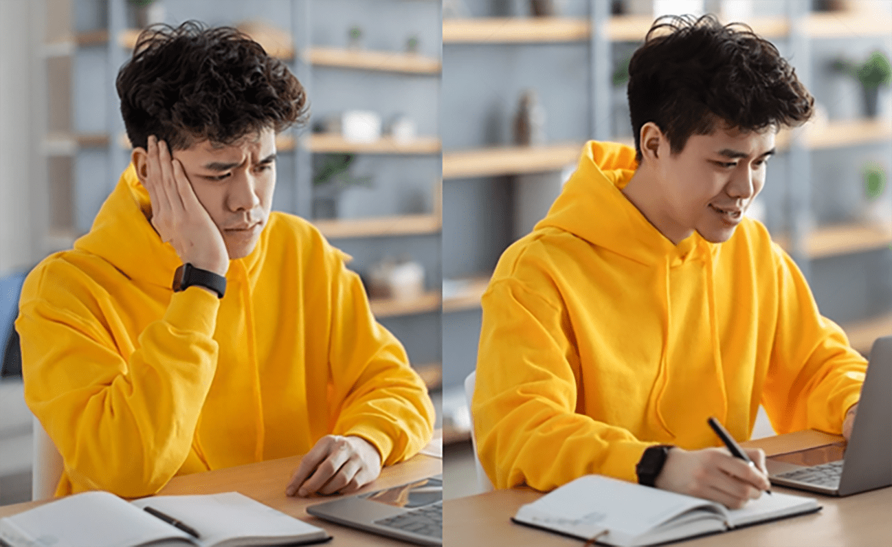
Feature 01
- 흥미 vs 지루함 분석결과 활용
- 흥미도를 측정할 때는 주변 상황과 복잡한 감정 상태를 고려해야 합니다.
- Raiseme의 흥미도 분석 AI 모델은 흥미도를 분석하는 동시에 지루함과 연관된 감정들을 보정하여 활용성이 높은 결과를 낼 수 있습니다.
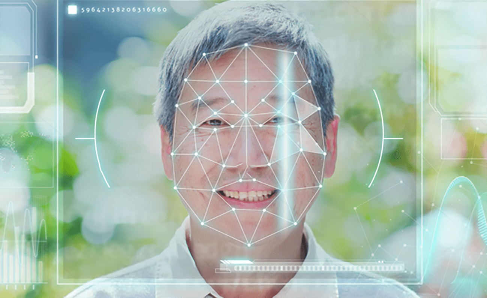
Feature 02
- 즉시 활용 가능한 분석결과
- 기존의 타 표정 기반 AI 모델은 7개의 감정으로만 흥미도와 지루함을 판정합니다.
- Raiseme는 흥미도와 지루함과 연관된 감정들을 수치로 변환하여 감정 변화를 정확하게 측정할 수 있습니다.
Feature 03
- 흥미도 실시간 평가 데이터활용
- 실제 사람들의 평가와 AI측정값이 일치하는지 실험을 통해 검증하였습니다.
- 영상 또는 대화 stream에서 얻는 감정을 실시간 평가하는 실험을 다수의 실험자에
실시하여 결과를 반영했습니다.
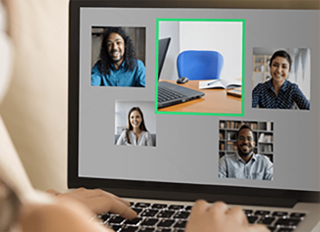
- 레이즈미의 자세 분석
AI 모델을 소개합니다
- 원격수업이나 상담을 진행할 때 참여자가 보이지 않거나
반응을 확인할 수 없는 경우에 AI가 해당 참여자를 리포팅합니다.
리포팅 결과를 통해 적극적인 참여를 유도하고
바른자세로 집중할 수 있도록 가이드 할 수 있습니다.
- Showcase 체험하기
차별화 포인트
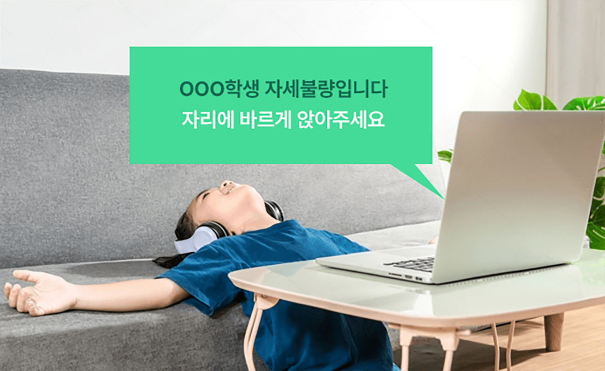
Feature 01
- 적절한 시점에 집중관리 대상 선정
- 대화 상대가 고의적으로 화면에서 벗어나는 상황을 발견할 수 있습니다.
- 자세에 따라 질문과 호명을 통해 바른 자세를 유도하고 참여 수준을 평가할 수 있습니다.
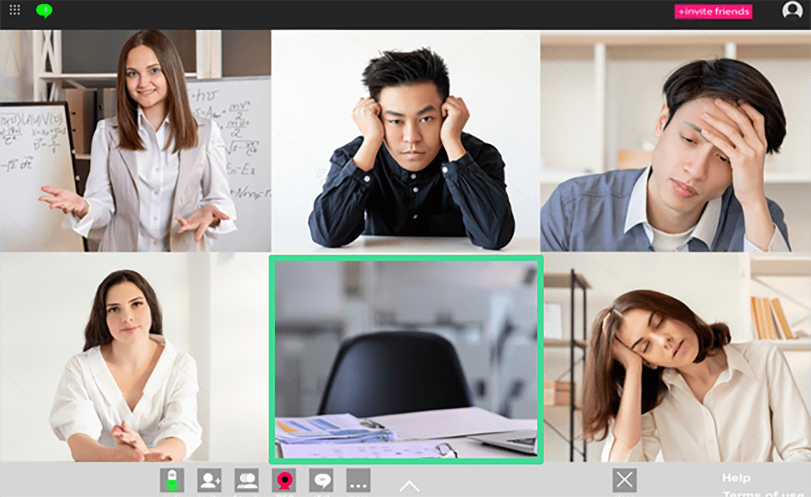
Feature 02
- 비대면 그룹 소통에 다양한 활용 가능
- 상대방의 참여 상태를 파악할 수 있어 수업 진행, 지도 방식을 개선할 수 있습니다.
- 학생이 자리를 비우는 상황에 즉시 대처할 수 있어 더 쉬운 학습지도가 가능합니다.
Feature 03
- 교사들의 핵심 요구사항 반영
- 비대면 수업에서 교사가 가장 필요로 하는 기능은 ‘수업자세 관리 및 지도’입니다.
- AI보조교사 도입 시 교사를 가장 효과적으로 지원하는 기능으로 선정된 기능을 AI모델로
구현하였습니다.
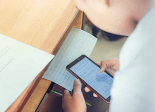
- 레이즈미의 시험 부정행위 검출
AI 모델을 소개합니다
- 시험 응시자의 부정행위를 실시간으로 관리하고
부정 행위 적발 시 시험 감독관에게 리포팅합니다.
온라인시험 현장에서 일어나는 각종 부정행위를 방지하거나
적발할 수 있어 더욱 공정하고 신뢰도 높은 평가를 할 수 있습니다.
- Showcase 체험하기
차별화 포인트
Feature 01
- 온라인시험 감독관이 참여 · 제작
- 삼성 G-SAT 및 내부 온라인시험 감독 경험을 기반으로 데이터를 제작하고 학습했습니다.
- 자체적인 온라인시험 진행•감독을 다년간 수행한 경험을 자세 분석 AI 모델 개발에 반영하였습니다.
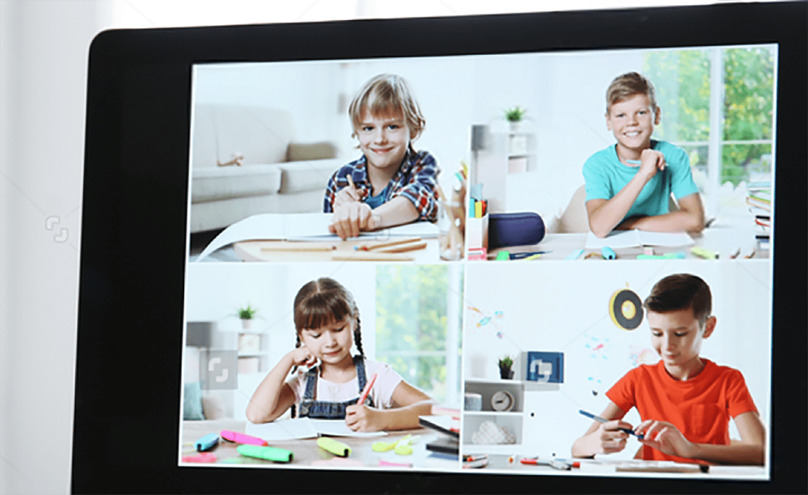
Feature 02
- 영상 기반의 높은 정확성
- 얼굴 각도, 상반신 자세, 수행 동작 등 여러 가지 요소를 동시에 모니터링할 수 있습니다.
- 수행 동작의 유사성을 비교해서 부정 행위를 판정합니다.
Feature 03
- 실시간 부정행위 검출
- 정상 VS 비정상 행위를 학습한 모델이 실시간으로 부정 응시자를 검출합니다.
- 발생시간·빈도·부정행위 유형을 자동으로 작성하고 증빙자료로 활용할 수 있습니다.
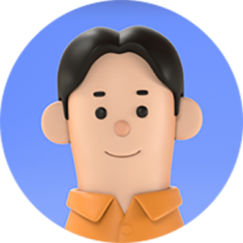
- 자율학습
- “ 제대로 집중해서
공부했는지 확신이 없어요 ”
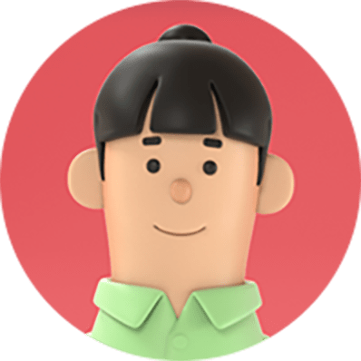
- 인터넷강의
- “ 놓치거나 이해하지 못한
구간만 다시 보고 싶어요 ”
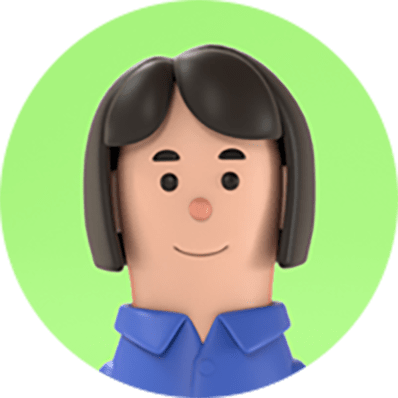
- 원격수업
- “ 학생들의 상태를 관찰하는데
시간이 오래 걸려요 ”
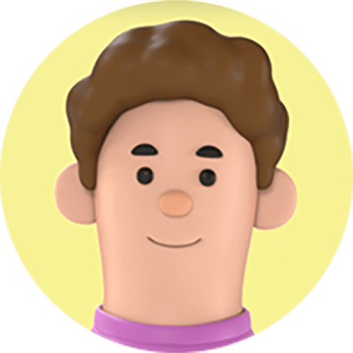
- 화상상담
- “ 상대방이 내 설명을 잘
이해하고 있는지 궁금해요 ”